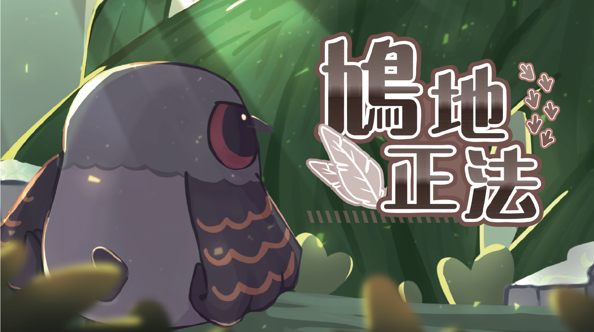
2D縱向卷軸動作小遊戲。共4個關卡，玩家將扮演斑鳩勇士打擊入侵者，捍衛自己的家園。
團隊分工
- 林沛琪 : 主視覺 / 角色設計 / 動畫繪製
- 陳宏威 : ＵＩ設計 / 背景繪製
- 陳語哲 : 企劃 / 遊戲程式
使用技術/軟體
- Clip Studio Paint
- Adobe Illustrator
- After Effect
- Unity+C#
設計動機
組員家裡附近的一座公園從有記憶以來一直是只屬於斑鳩們的棲息地，但近日卻突然開始出現鴿子的蹤跡，而且有越來越多的跡象，反之斑鳩的數量卻似乎逐漸地在減少...
前導故事
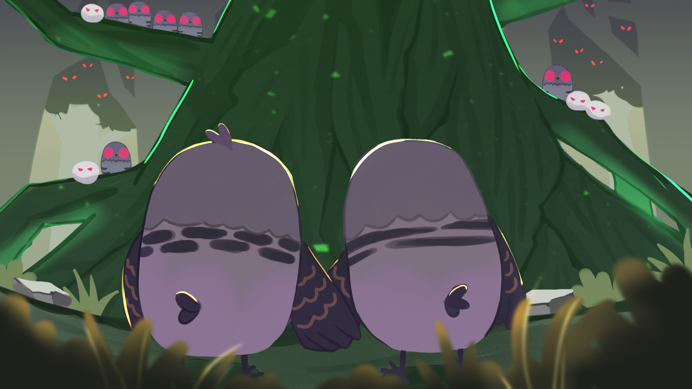
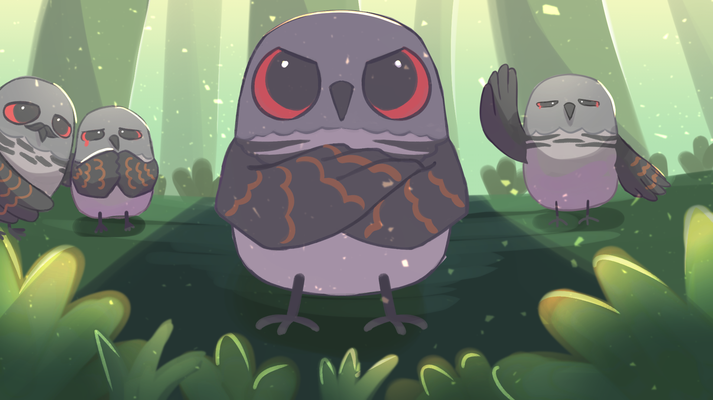
角色介紹
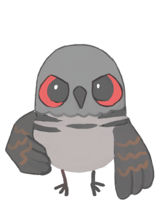
鳩勇
斑鳩勢力的孤注一擲。揮舞著削尖的羽毛，踏上故土奪回這一切。
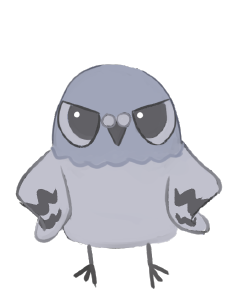
阿兵鴿
標準的哨兵、王子殿下最忠心的手下，一心守衛著通往樹頂的路。
鴿丸
王子殿下的得力助手。雖未成年，仍以敏捷的速度提供防備。
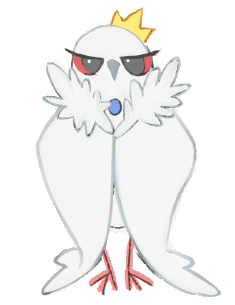
鴿之王子殿下
鴿群的首領，優雅且致命，無上的強者。受鴿子們萬般的擁護。
其他
鳥屎
扣生命值
打鬥時會從天而降
蟲
回血用
打倒阿兵鴿會掉落
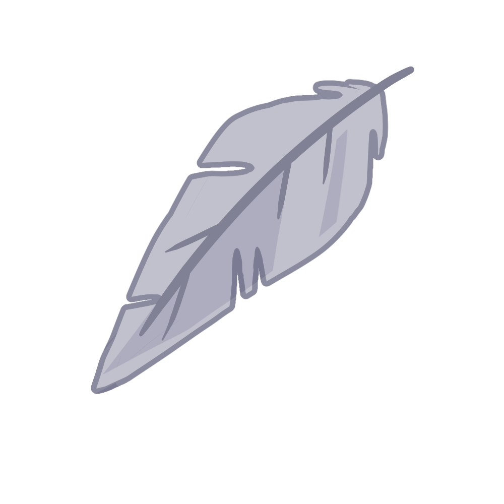
羽毛
扣生命值
阿兵鴿的攻擊武器
羽劍
扣生命值
鴿王子華麗的招式
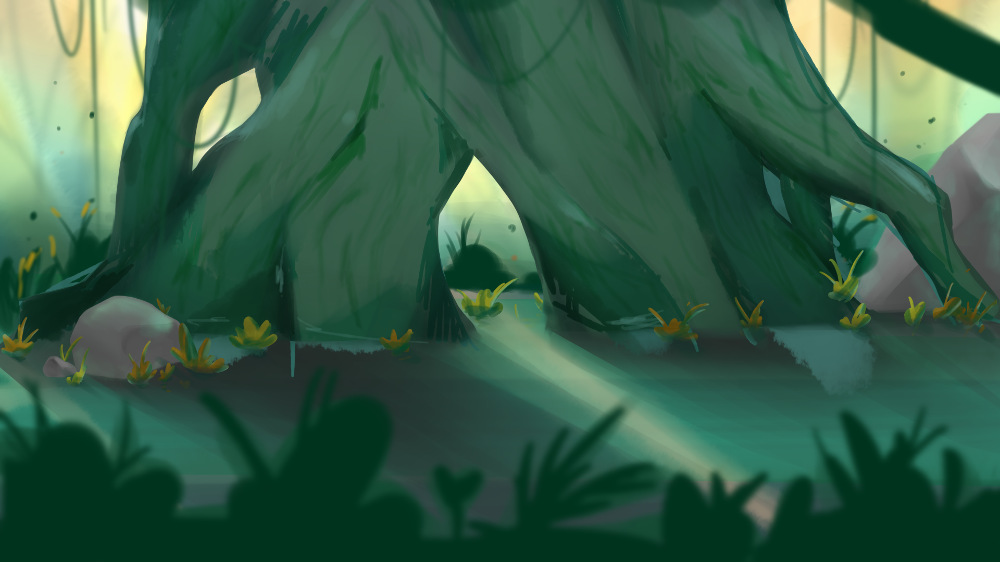
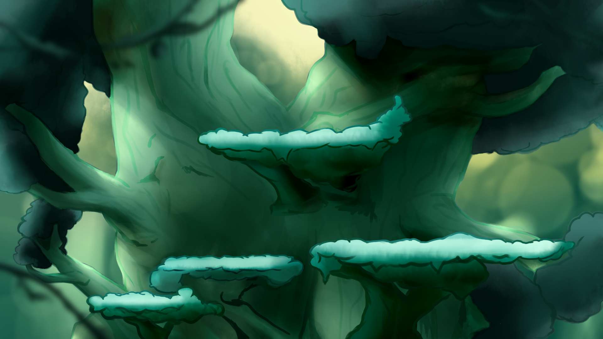
遊戲畫面
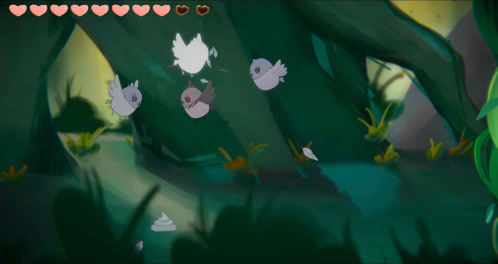
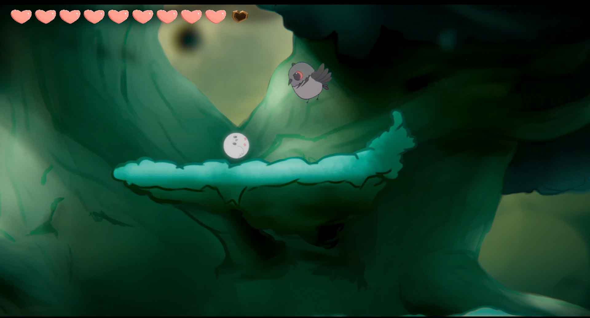
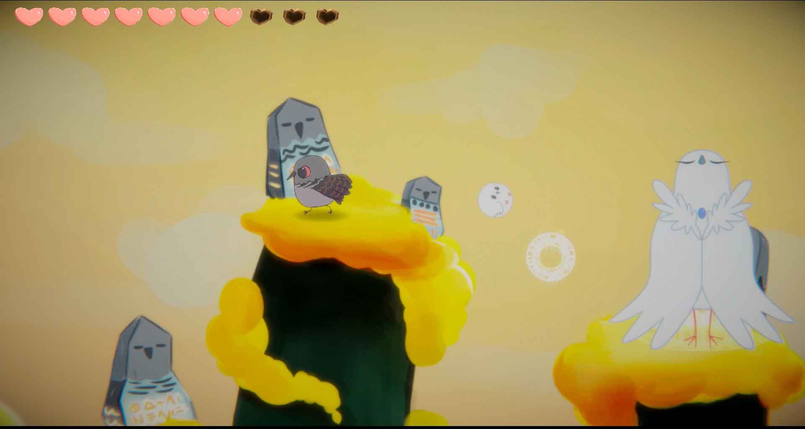
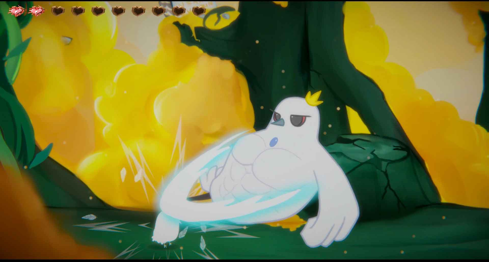
DEMO影片
最終成果展出
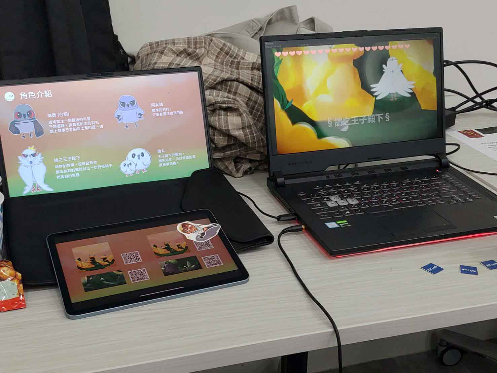
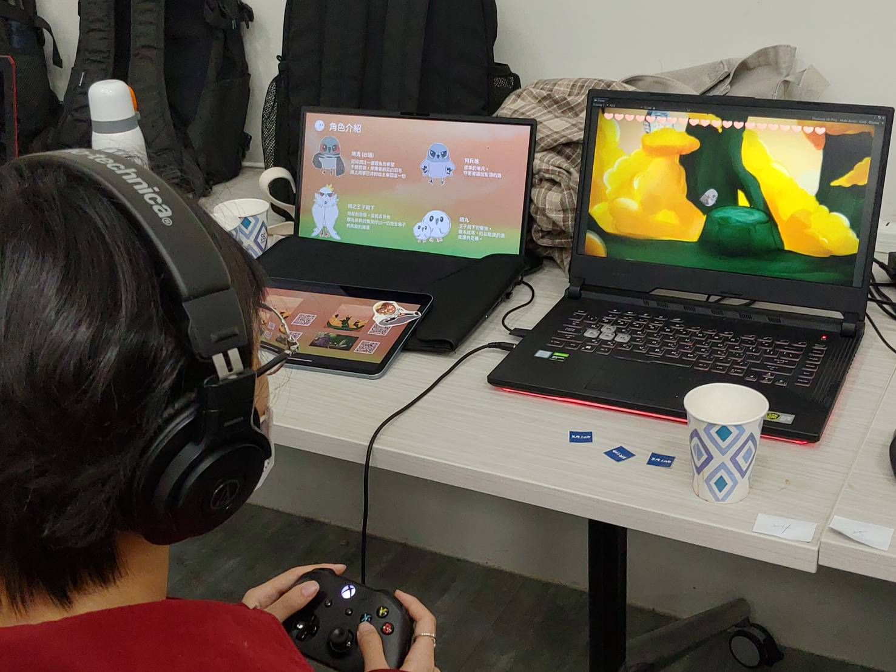
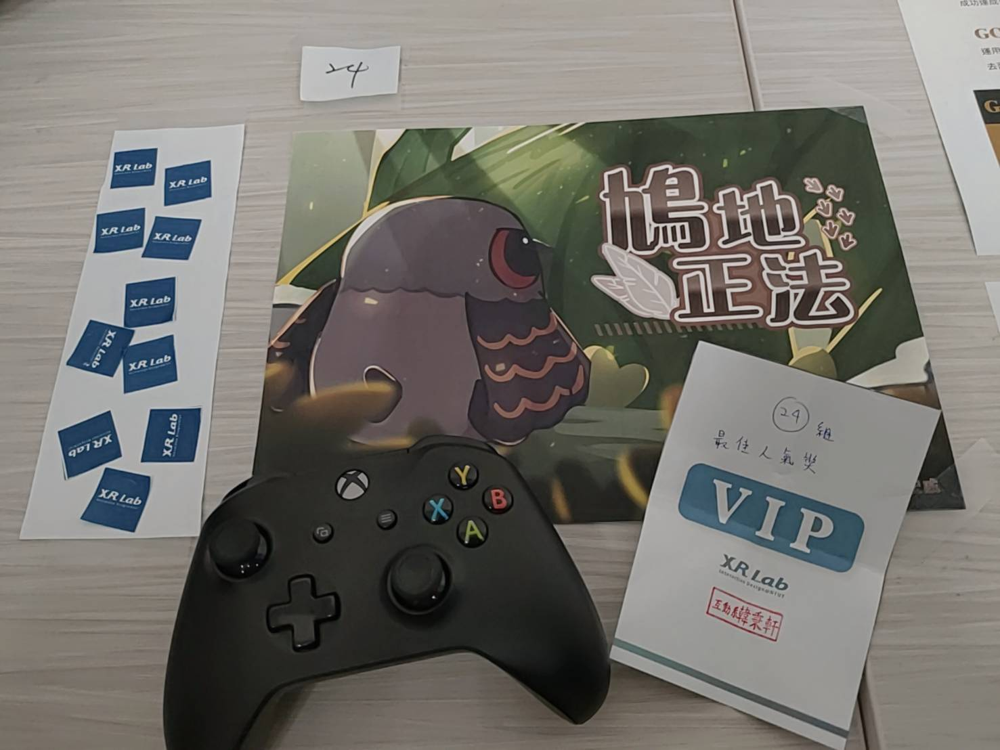
期末展出時除了班上同學交流外，也開放給其他系的同學一同來遊玩，教授另外辦了個投票的活動讓大家投出自己喜歡的遊戲作品，很開心我們組榮獲人氣獎第一名。